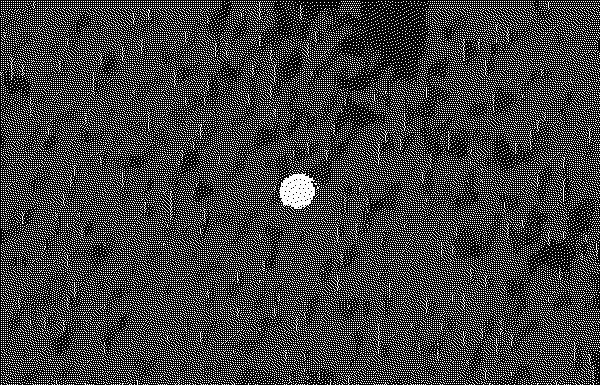
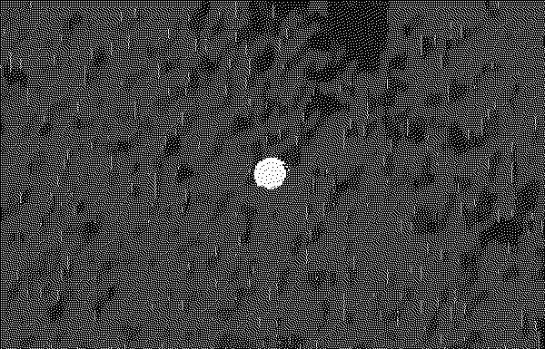

2022/04/01
I have way too many projects that need starting... Next up is setting the turntable we have up in the most optimal way :: it's a rather cheap suitcase Crosley plasticy mess but it does indeed produce sound.

2022/04/01
I have way too many projects that need starting... Next up is setting the turntable we have up in the most optimal way :: it's a rather cheap suitcase Crosley plasticy mess but it does indeed produce sound.

currently reading
read this year